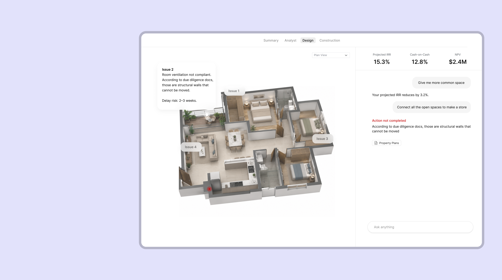
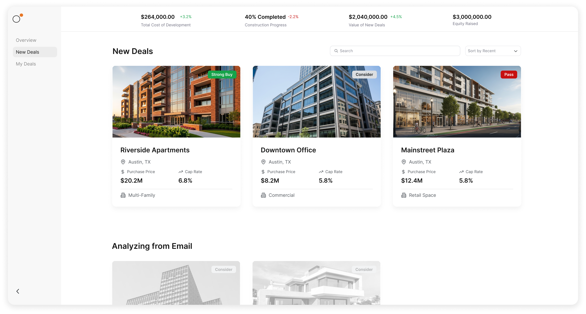
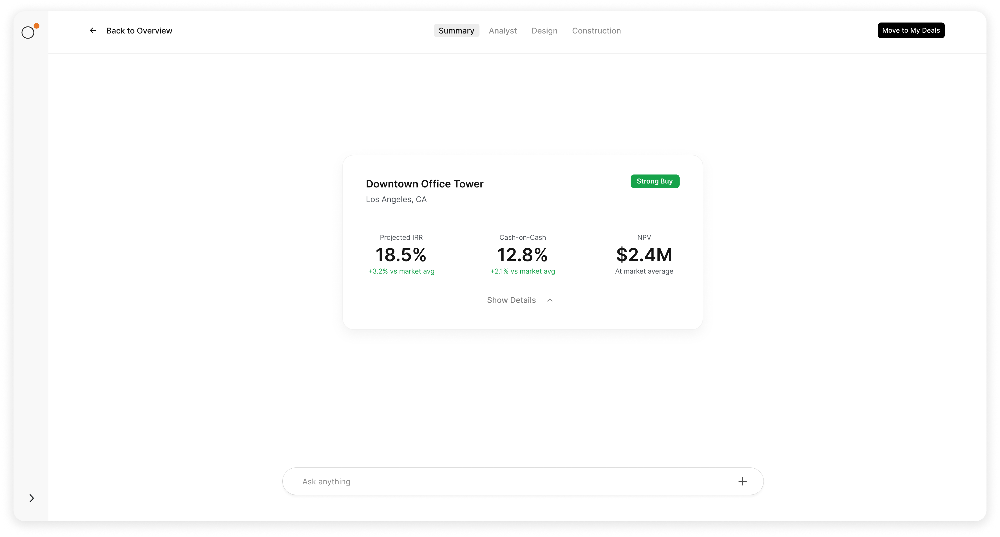
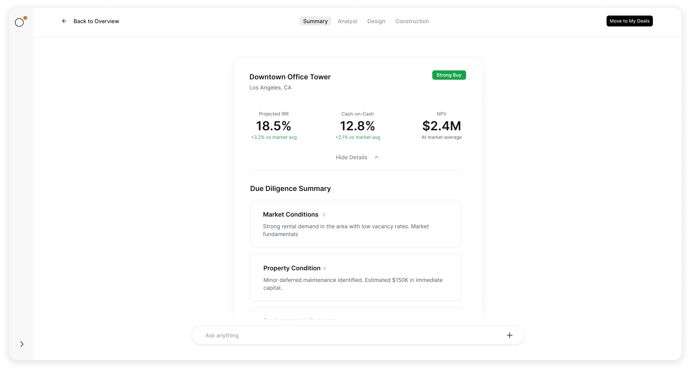
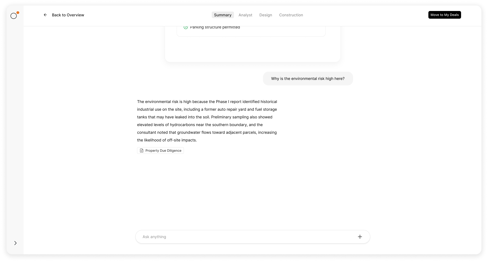
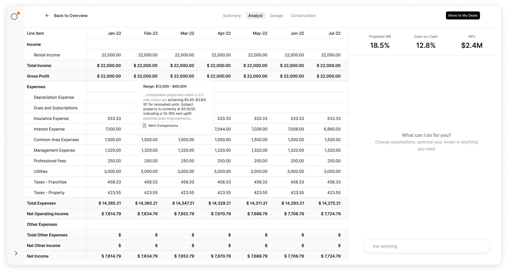
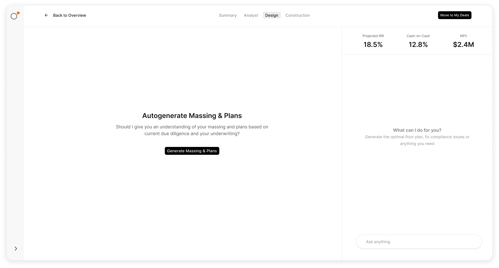
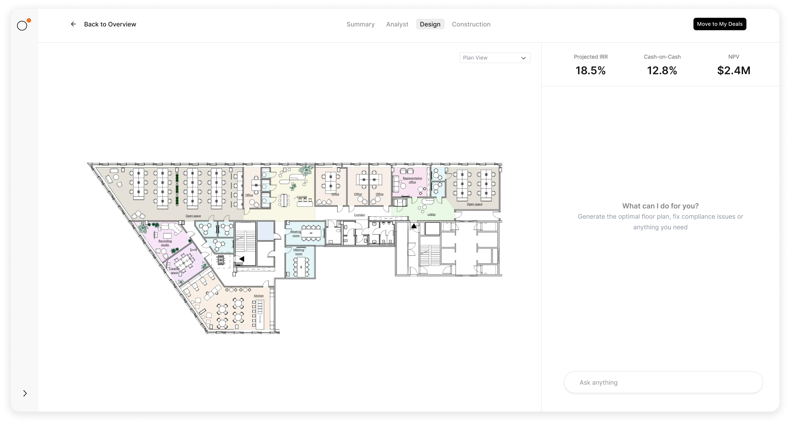
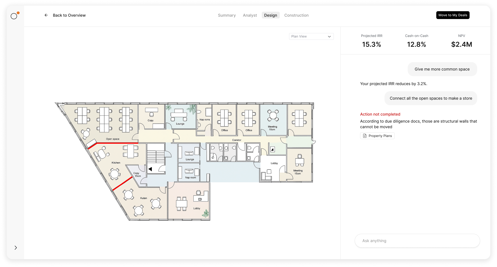
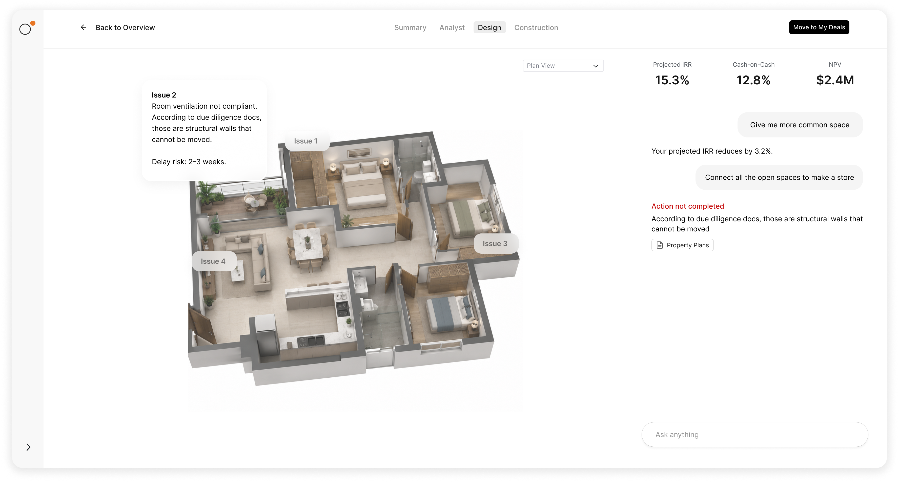

Real estate development runs on numbers and drawings — and the margin for error in both is effectively zero. A conflict between a structural drawing and a specification, or a miscalculation buried in a pro forma, can cascade into change orders, delays, and seven-figure cost overruns.
Cayda was built to catch those problems before construction starts. An AI platform for developers that reads across drawing sets, specifications, and financial models simultaneously — flagging errors, surfacing conflicts, and automating the reviews that used to take weeks.

Conflict dashboard — all flagged issues across the drawing set, sorted by severity and discipline.

Drill-down view showing exact discrepancies between drawing sheets and specifications, side by side.

Automated specification review flagging every material call-out and performance requirement that doesn't reconcile with the drawings.
Design review isn't a one-time event — it happens in rounds, across disciplines, over months. Cayda tracks every revision, re-runs the checks automatically when new drawings are uploaded, and shows exactly what changed and what new issues were introduced. The review cycle becomes a continuous process, not a bottleneck.

Revision tracker highlighting new conflicts in red and resolved items in green across drawing rounds.

Issue assignment interface — each conflict tracked to an owner with full response and resolution history.
Construction budgets fail when assumptions in the pro forma don't match what the drawings actually show. Cayda reads the financial model alongside the design — checking that the scope priced in the budget aligns with the scope shown on the drawings, and flagging every line item where they diverge.

Financial review layer cross-referencing pro forma assumptions against the drawn scope, with estimated cost impact per discrepancy.

Cost variance dashboard tracking the delta between budgeted and drawn scope in real time across design rounds.

One-click executive summary compiling open conflicts, financial variances, and outstanding RFIs for lenders and ownership.

Unified project view — design, specifications, and financials reviewed together in a single platform.
Development teams using Cayda reduced design-phase review time by over 70% and caught an average of 34 drawing conflicts per project that had gone undetected through traditional coordination. Financial variances surfaced before construction start saved an average of 4–8% of total project cost.
Cayda turns the review process from a manual bottleneck into an automated checkpoint — so developers build with confidence, not surprises.